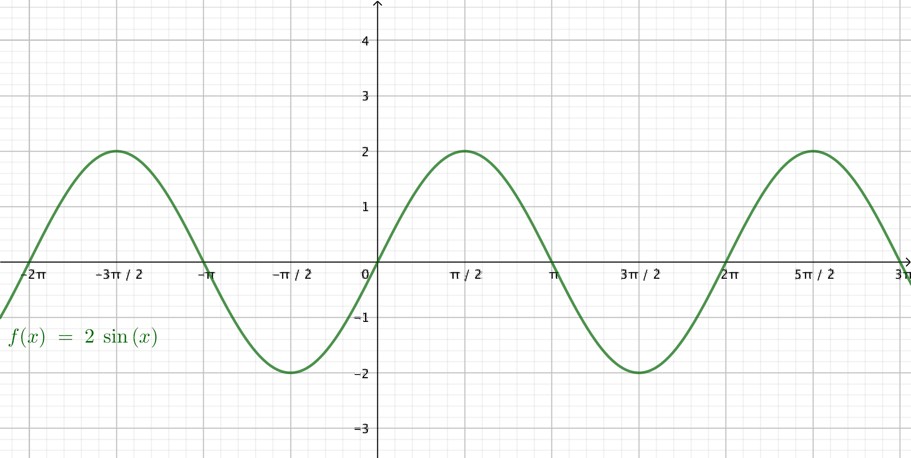
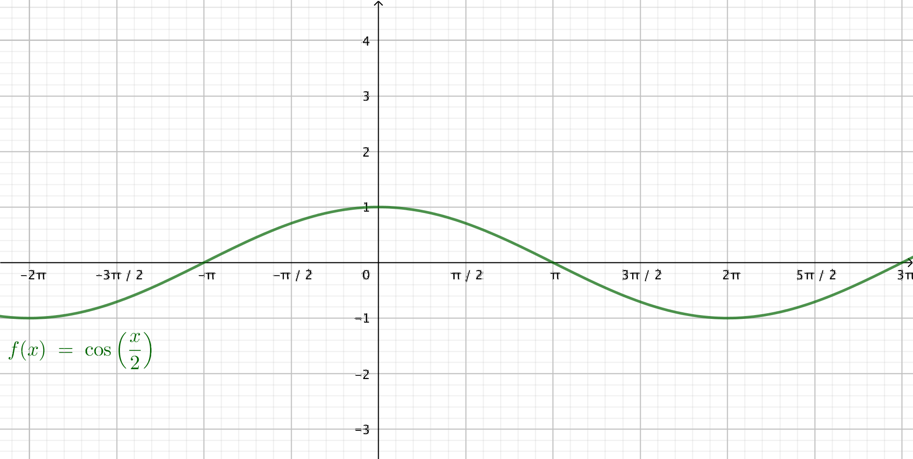
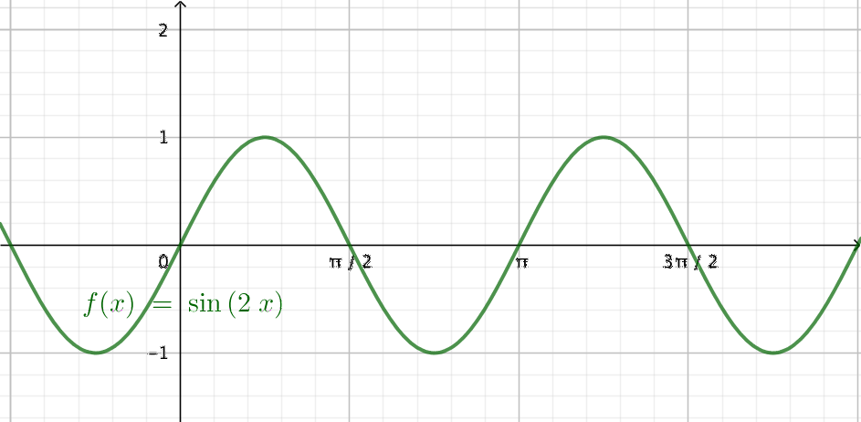
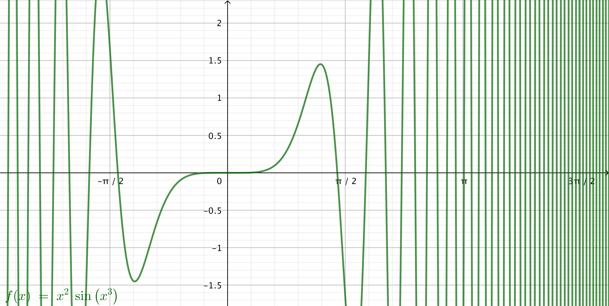
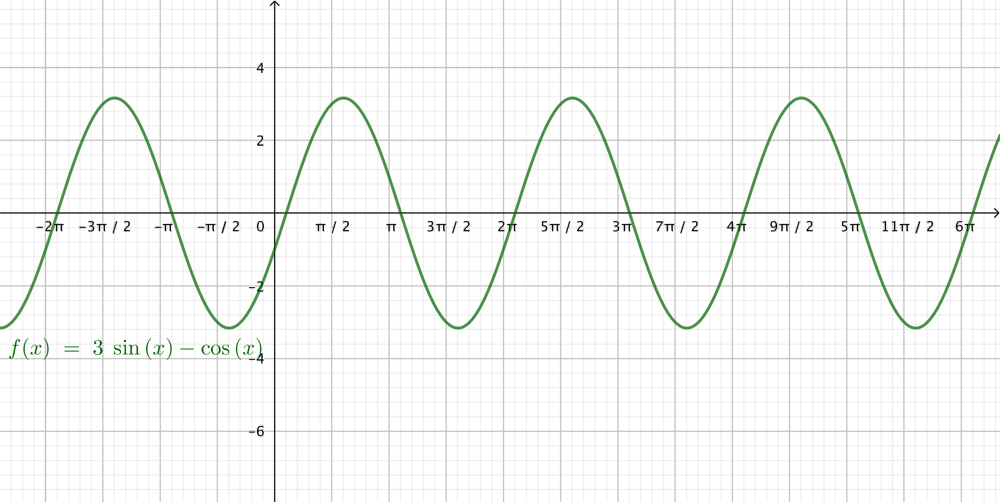

8. Bestämd integral
Från förra kapitlet fick vi bland annat att arean för ett område i intervallet \( [a,b] \) som begränsas av funktionen \( f \) och \( x \)-axeln beräknar vi som \( A = F(b)-F(a) \).

Skillnaden som uppstår då vi bestämmer arean, \( F(b)-F(a) \), kallas för den bestämda integralen för funktionen \( f \) från \( a \) till \( b \). Den bestämda integralen betecknas \( \displaystyle\int_a^b f(x)\mathrm{ d}x. \)
Exempel 1 Bestäm \( \displaystyle\int_1^4 (2x^3 - 4)\mathrm{ d}x \).
Lösning
\( \begin{array}{rcl} \displaystyle\int_1^4 (2x^3 - 4)\mathrm{ d}x & = & \bigg/_1^4 \; 2\cdot \dfrac{1}{4}x^4-4x \\ \\ & = & \bigg/_1^4 \; \dfrac{1}{2}x^4-4x \\ & = & (\dfrac{1}{2}\cdot4^4-4\cdot 4)- (\dfrac{1}{2}\cdot 1^4-4\cdot 1) \\ & = & 112 - (-3\dfrac{1}{2})= 115\dfrac{1}{2}\\ \end{array} \)
Insättning av gränserna för den bestämda integralen betecknas med \( \bigg/_a^b \).
För en bestämd integral gäller alltså att \( \displaystyle\int_a^b f(x)\mathrm{ d}x = \bigg/_a^b \;F(x)=F(b)-F(a) \).
Den bestämda integralen har följande egenskaper:
- \( \displaystyle\int_a^b (f(x)+g(x))\mathrm{ d} x = \displaystyle\int_a^b f(x)\mathrm{ d} x+\displaystyle\int_a^b g(x)\mathrm{ d} x \). Vi intergrear termvis.
- \( \displaystyle\int_a^b kf(x)\mathrm{ d}x = k\displaystyle\int_a^b f(x)\mathrm{ d}x \). Vi flyttar koefficienter utanför.
- vi kan dela upp den som summa\( \displaystyle\int_a^b (f(x)+g(x))\mathrm{ d} x = \displaystyle\int_a^b f(x)\mathrm{ d} x+\displaystyle\int_a^b g(x)\mathrm{ d} x \)
- flytta ut en konstant\( \displaystyle\int_a^b kf(x)\mathrm{ d}x = k\displaystyle\int_a^b f(x)\mathrm{ d}x \)
Exempel 2 Bestäm \( \displaystyle\int_0^1 (e^{-x}+1)^2 \mathrm{ d}x \).
Lösning
Vi har följande
\( \begin{array}{rcl} \displaystyle\int_0^1 (e^{-x}+1)^2 \mathrm{ d}x & = & \displaystyle\int_0^1 \;(e^{{-x}^2}+2e^{-x}+1)\mathrm{ d}x \\ \\ & = & \displaystyle\int_0^1 e^{-2x}\mathrm{ d}x+\displaystyle\int_0^1 2e^{-x}\mathrm{ d}x+\displaystyle\int_0^1 1\mathrm{ d}x \\ \\ & = & -\dfrac{1}{2}\displaystyle\int_0^1 -2e^{-2x}\mathrm{ d}x+2(-1)\displaystyle\int_0^1 -e^{-x}\mathrm{ d}x+\displaystyle\int_0^1 1\mathrm{ d}x \\ \\ & = & -\dfrac{1}{2}\bigg/_0^1 \;e^{-2x} -2 \bigg/_0^1 \;e^{-x} + \bigg/_0^1 \; x \\ \\ & = & -\dfrac{1}{2}(e^{-2\cdot1}-e^{-2\cdot 0})-2(e^{-1}-e^0)+(1-0) \\ \\ & = & -\dfrac{1}{2}(e^{-2}-1)-2(e^{-1}-1)+1 \\ \\ & = & -\dfrac{1}{2}e^{-2}+\dfrac{1}{2}-2e^{-1}+2+1 \\ \\ & = & -\dfrac{1}{2}e^{-2}-2e^{-1}+3\dfrac{1}{2}\\ \end{array} \)
För en bestämd integral kan vi dela upp intervallet så att vi styckvis bildar den bestämda integralen \( \displaystyle\int_a^b f(x)\mathrm{ d}x= \displaystyle\int_a^c f(x)\mathrm{ d}x+\displaystyle\int_c^b f(x)\mathrm{ d}x \) där \( a < c < b \).
För en bestämd integral kan vi ändra ordningen på varifrån vart som vi integrerar. Det vi då får är den motsatta bestämda integralen.
\( \displaystyle\int_a^b f(x) \mathrm{ d}x = -\displaystyle\int_b^a f(x) \mathrm{ d}x. \)
Om det är så att övre och nedre gränsen har samma värde får den bestämda integralen värdet 0, \( \displaystyle\int_a^a f(x) \mathrm{ d}x = 0. \)
Exempel 3 Bestäm \( \displaystyle\int_0^\pi \sin x \mathrm{ d} x+ \displaystyle\int_\pi^0 \sin x \mathrm{ d} x \).
Lösning
Vi får att
\( \displaystyle\int_0^\pi \sin x \mathrm{\,d} x+ \displaystyle\int_\pi^0 \sin x \mathrm{\,d} x = \displaystyle\int_0^0 \sin x \mathrm{\,d} x =0 \).
För en bestämd integral gäller att \( \displaystyle\int_a^b f(x)\mathrm{ d}x = \bigg/_a^b \;F(x)=F(b)-F(a). \)
En bestämd integal har följande egenskaper
Vi kan dela upp den styckevis \( \displaystyle\int_a^b f(x)\mathrm{ d}x= \displaystyle\int_a^c f(x)\mathrm{ d}x+\displaystyle\int_c^b f(x)\mathrm{ d}x \) där \( a < c < b \) och ändra på ordningen för ändpunkterna \( \displaystyle\int_a^b f(x) \mathrm{ d}x = -\displaystyle\int_b^a f(x) \mathrm{ d}x. \)
Uppgifter
- Bestäm följade integraler
- \( \displaystyle\int_{5}^8 \dfrac{1}{2}x-2\mathrm{\, d}x \)
Funktionen är ovan x-axlen.
\(\begin{array}{rcl} A & = & \displaystyle\int_{5}^8 \dfrac{1}{2}x-2\mathrm{ d}x \\ & = & \bigg/_{5}^8 \; \dfrac{1}{4}x^2-2x \\ & = & (\dfrac{1}{4}\cdot 8^2-2\cdot 8)-(\dfrac{1}{4}\cdot 5^2-2\cdot 5) \\ & = & 0-(-3\dfrac{3}{4})=3\dfrac{3}{4} \\ \end{array}\)
- \( \displaystyle\int_1^3 \dfrac{1}{3}x^2+2\mathrm{\, d}x \)
I intervallet är funktionen ovanför x-axeln.
\( \begin{array}{rcl} A & = & \displaystyle\int_1^3 \dfrac{1}{3}x^2+2\mathrm{ d}x \\ & = & \bigg/_1^3 \;\dfrac{1}{9}x^3+2x \\ & = & (\dfrac{1}{9}\cdot 3^3+2\cdot 3)-(\dfrac{1}{9}\cdot1^3+2\cdot 1) \\ & = & 9-\dfrac{19}{9}=6\dfrac{8}{9} \\ \end{array}\)
- \( \displaystyle\int_{-2}^0 -x^2 -2x \mathrm{\,d}x \)
I intervallet är funktionen ovanför x-axeln.
\( \begin{array}{rcl} A & = & \displaystyle\int_{-2}^0 -x^2 -2x \mathrm{\,d}x \\ & = & \bigg/_{-2}^0 -\dfrac{1}{3}x^3-2\dfrac{1}{2}x^2 \\ & = & \bigg/_{-2}^0 -\dfrac{1}{3}x^3-x^2 \\ & = & -\dfrac{1}{3}\cdot 0^3-0^2 -(-\dfrac{1}{3}(-2)^3-(-2)^2) \\ & = & \dfrac{4}{3} \\ \end{array}\)
- \( \displaystyle\int_{-1}^0 2x^3-4x+1 \mathrm{ d}x \)
I intervallet är funktionen ovanför x-axeln.
\( \begin{array}{rcl} A & = & \displaystyle\int_{-1}^0 2x^3-4x+1 \mathrm{ d}x \\ & = & \bigg/_{-1}^0 \;\dfrac{1}{2}x^4-2x^2+x \\ & = & [\dfrac{1}{2}\cdot0^4-2\cdot 0^2+0]-[\dfrac{1}{2}\cdot (-1)^4-2\cdot (-1)^2-1] \\ & = & 0-(-2\dfrac{1}{2})=2\dfrac{1}{2} \\ \end{array}\)
- \( \displaystyle\int_{5}^8 \dfrac{1}{2}x-2\mathrm{\, d}x \)
- Bestäm följande integraler
- \( \displaystyle\int_0^{\pi} 2\sin x \mathrm{\,d}x \)
Vår funktion ser ut som

I intervallet är den ovanför x-axeln.
\(\begin{array}{rcl} A & = & \displaystyle\int_0^{\pi} 2\sin x \mathrm{\,d}x \\ & = & \bigg/_0^{\pi} -2\cos x = -2\cos \pi -(-2\cos 0) \\ & = & -2(-1)+2\cdot 1 = 4 \\ \end{array}\)
- \( \displaystyle\int_0^{\frac{\pi}{2}} \cos \dfrac{x}{2}\mathrm{ \,d}x \)
Vår funktion ser ut som

Funktionen är sammansatt och vi kompenserar.
\(\begin{array}{rcl} A & = & 2\displaystyle\int_0^\frac{\pi}{2} \dfrac{1}{2}\cos \dfrac{x}{2}\mathrm{ d}x \\ & = & 2\bigg/_0^{\frac{\pi}{2}} \sin(\dfrac{x}{2}) \\ & = & 2[\sin(\dfrac{\pi}{2}\cdot\dfrac{1}{2})-\sin(\dfrac{0}{2})] \\ & = & 2(\dfrac{1}{\sqrt{2}}-0) = \sqrt{2} \\ \end{array}\)
- \( \displaystyle\int_0^{\pi} \sin 2x \textrm{ d}x \).
Funktionen är ovan och under x-axeln.

Vi bestämmer arean genom att dela in den i två, \( 0 \) till \( \dfrac{\pi}{2} \) och \( \dfrac{\pi}{2} \) till \( \pi \). Vi kan göra det på grund av symmetrin hos sinus.
\( \begin{array}{rcll} A & = & 2\cdot \displaystyle\int_0^{\frac{\pi}{2}} \sin 2x \textrm{ d}x & \textrm{ Sammansatt funktion.}\\ & = & 2\cdot \displaystyle\int_0^{\frac{\pi}{2}} \dfrac{1}{2}\cdot 2\sin 2x \textrm{ d}x \\ & = & 2\cdot \bigg/_0^{\frac{\pi}{2}} -\dfrac{1}{2}\cos 2x \\ & = & 2\cdot \bigg/_0^{\frac{\pi}{2}} -\dfrac{1}{2}\cos 2x \\ & = & 2 [-\dfrac{1}{2}\cos 2\dfrac{\pi}{2} -(-\dfrac{1}{2}\cos 2\cdot 0)] \\ & = & 2 [-\dfrac{1}{2}(-1) -(-\dfrac{1}{2}\cdot 1)] \\ & = & 2 [-\dfrac{1}{2}(-1) -(-\dfrac{1}{2}\cdot 1)] \\ & = & 2 (\dfrac{1}{2} + \dfrac{1}{2}) = 2 \\ \end{array} \)
- \( \displaystyle\int_0^{2\pi} 2\cos 2x \textrm{ d}x \).
Funktionen är ovan och under x-axeln.

Vi bestämmer arean genom att dela in den i mindre delar. För det behöver vi nollställen, \( f(x) = 0 \) då \( x = \dfrac{\pi}{4} + n\cdot\dfrac{\pi}{2} \).
Antingen som 8 st områden eller som 4 st områden.
\( \begin{array}{rcll} A & = & 8\cdot \displaystyle\int_0^{\frac{\pi}{4}} 2\cos 2x \textrm{ d}x & \textrm{ Sammansatt funktion.}\\ & = & 8\cdot \bigg/_0^{\frac{\pi}{4}} \sin 2x \\ & = & 8 [\sin(2\cdot \dfrac{\pi}{4}) - \sin (2\cdot 0)] \\ & = & 8 [1 - 0] = 8 \\ \end{array} \)
- \( \displaystyle\int_0^{\pi} 2\sin x \mathrm{\,d}x \)
- Bestäm \( \displaystyle\int_0^1 x^2\sin x^3 \mathrm{\,d}x \).
Vår funktion ser ut som

I intervallet är den ovan x-axeln. Vi får
\( \begin{array}{rcl} A & = & \displaystyle\int_0^1 x^2\sin x^3 \mathrm{\,d}x \\ & = & \dfrac{1}{3}\displaystyle\int_0^1 3x^2\sin x^3 \mathrm{\,d}x \\ & = & \dfrac{1}{3}\bigg/_0^1 -\cos x^3 \\ & = & -\dfrac{1}{3}[\cos 1^3 - \cos 0^3] \approx 0,15323\ldots \\ \end{array}\)
- Bestäm \( \displaystyle\int_{1}^e \dfrac{1}{x}+1\mathrm{ d}x \).
Vår funktion är ovanför x-axeln.
Vi får
\( \begin{array}{rcl} A & = & \displaystyle\int_{1}^e \dfrac{1}{x}+1\mathrm{ d}x \\ & = & \bigg/_{1}^e \ln \mid x \mid + x \\ & = & (\ln e+e) -(\ln 1 +1) \\ & = & (1+e)-1 = e \\ \end{array}\)
- Bestäm \( \displaystyle\int_1^2 \dfrac{3}{5x} \mathrm{\,d}x \).
Vår funktion är ovanför x-axeln.
Vi får
\( \begin{array}{rcl} A & = & \displaystyle\int_1^2 \dfrac{3}{5x} \mathrm{\,d}x \\ & = & \bigg/_1^2 \dfrac{3}{5}\ln x \\ & = & \dfrac{3}{5}(\ln 2 - \ln 1) \\ & = & \dfrac{3}{5}\ln 2 \end{array} \)
- Bestäm \( \displaystyle\int_1^3 \dfrac{1}{2x}+1 \mathrm{\,d}x \).
Vår funktion är ovanför x-axeln.
Vi får
\(\begin{array}{rcl} A & = & \displaystyle\int_1^3 \dfrac{1}{2x}+1 \mathrm{\,d}x \\ & = & \bigg/_1^3 \dfrac{1}{2}\ln x +x \\ & = & \dfrac{1}{2}\ln 3 + 3 -(\dfrac{1}{2}\ln 1+1) \\ & = & \dfrac{1}{2}\ln 3 + 3 -(0+1) \\ & = & \dfrac{1}{2}\ln 3 + 2 \\ \end{array} \)
- Bestäm \( \displaystyle\int_{-\pi}^{2\pi} (3\sin x - \cos x)\textrm{ d}x \).
Vi har en funktion som ser ut som

Vi märker att funktionen är symmetrisk och att i intervallet \( -\pi \) till \( 2\pi \) 2 st hela områden, vid \( -\pi \) har vi ett mindre område och vid \( 2\pi \) ett lite större område. På grund av symmetrin har vi 3 st symmetriska områden.
Vi behöver veta bredden på ett område. Alltså \( f(x) = 0 \). Vi kommer fram till \( \tan x = \dfrac{1}{3} \), Ekvationen saknar exakta lösningar, vi använder oss av närmevärden. Alltså \( x = -2,82 \) och \( x=0,32 \).
Alltså (observera att i första intervallet har vi funktionen under x-axeln.)
\( \begin{array}{rcl} A & = & -3\displaystyle\int_{-2,82}^{0,32} (3\sin x - \cos x)\textrm{ d}x \\ & = & 18,97 \\ \end{array}\)
Integrera på räknare, eller för hand.
- Bestäm följande integraler.
Försök inte slå huvudet i väggen. Använd huvudet och förenkla först.
- \( \displaystyle\int_1^e (\dfrac{\ln x}{x} - \dfrac{1}{x}) \textrm{ d}x - \displaystyle\int_1^e (\dfrac{\ln x}{x} + \dfrac{1}{x}) \textrm{ d}x \).
\( \displaystyle\int_1^e (\dfrac{\ln x}{x} - \dfrac{1}{x}) \textrm{ d}x - \displaystyle\int_1^e (\dfrac{\ln x}{x} + \dfrac{1}{x}) \textrm{ d}x = -2\displaystyle\int_1^e \dfrac{1}{x} = -2 \)
- \( \displaystyle\int_{-2}^3 \sin^2 x \textrm{ d}x - \displaystyle\int_{3}^{-2} (\cos^2 x + 5) \textrm{ d}x \)
\( \displaystyle\int_{-2}^3 \sin^2 x \textrm{ d}x - \displaystyle\int_{3}^{-2} (\cos^2 x + 5) \textrm{ d}x = \displaystyle\int_{-2}^3 \sin^2 x + \cos^2 x +5 \textrm{ d}x = \displaystyle\int_{-2}^3 1+5 \textrm{ d}x = 30 \)
- \( \displaystyle\int_1^e (\dfrac{\ln x}{x} - \dfrac{1}{x}) \textrm{ d}x - \displaystyle\int_1^e (\dfrac{\ln x}{x} + \dfrac{1}{x}) \textrm{ d}x \).
- För vilket värde på \( a \) gäller att \( \displaystyle\int_{a}^{a+1} (2x-3) \textrm{ d}x = 6 \).
Vi får ekvationen
\( \begin{array}{rcl} \displaystyle\bigg/_{a}^{a+1} x^2 -3x & = & 6 \\ (a+1)^2 -3(a+1) -(a^2-3a) & = & 6 \\ \vdots \\ a & = & 4 \\ \end{array} \)
- För vilket värde på \( a \) gäller att \( \displaystyle\int_0^a \sin 2x\mathrm{\, d}x = 1 \)?
Vi får ekvationen
\( \begin{array}{rcl} \displaystyle\int_0^a \sin (2x)\mathrm{ d}x & = & 1 \\ \dfrac{1}{2}\displaystyle\int_0^a 2\sin (2x)\mathrm{ d}x & = & 1 \\ \dfrac{1}{2}\bigg/_0^a -\cos 2x & = & =1 \\ -\cos (2a) -(-\cos (2\cdot 0)) & = & 2 \\ -\cos (2a) + 1 & = & 2 \\ \cos (2a) & = & -1 \\ \end{array} \)
som har lösningarna \( 2a=\pi +n\cdot 2\pi \Leftrightarrow a=\dfrac{\pi}{2} +n\cdot \pi \).
Alltså då \( a=\dfrac{\pi}{2} \).
- För vilket värde på \( a \) gäller att \( \displaystyle\int_{-4}^a -x^2-4x \text{ d}x = 9 \)?
Vi får ekvationen
\( \begin{array}{rcl} \displaystyle\int_{-4}^a -x^2-4x \mathrm{ d}x & = & 9\\ \bigg/_{-4}^a -\dfrac{1}{3}x^3-2x^2 & = & 9\\ (-\dfrac{1}{3}a^3-2a^2)-(-\dfrac{1}{3}(-4)^3-2(-4)^2) & = & 9 \\ -\dfrac{1}{3}a^3-2a^2+\dfrac{5}{3} & = & 0 \\ \end{array} \)
som har lösningarna \( a\approx -5,85 \), \( a=-1 \) och \( a\approx 0,85 \) (lös på räknare).
\( f(x)=-x^2-4x \) är positiv då \( -4\leq x \leq 0 \). Därför är \( a=-1 \).
- För vilket värde på \( a \) gäller att \( \displaystyle\int_0^3 (a^2t^3 +a) \textrm{ d}t = 0 \)?
Vi får
\( \begin{array}{rcl} \displaystyle\int_0^3 (a^2t^3 +a) \textrm{ d}t & = & 0 \\ \bigg/_0^3 a^2\cdot \dfrac{1}{4}t^4 +at & = & 0 \\ a^2\cdot \dfrac{1}{4}\cdot 3^4 +a\cdot 3 - (a^2\cdot \dfrac{1}{4}0^4 +a\cdot 0) & = & 0 \\ \dfrac{81}{4}a^2 +3a & = & 0 \\ a(\dfrac{81}{4}a +3) & = & 0 \\ \end{array} \)Alltså då \( a = 0 \) eller då \( \dfrac{81}{4}a +3 = 0 \), alltså \( a = -\dfrac{1}{3} \).
- För vilket värde på \( a \) har den primitiva funktionen \( \displaystyle\int_{a}^{a+1} x^2 + x +1 \textrm{ d}x \) ett så litet värde som möjligt?
Vi börjar med att bestämma den primitiva funktionen.
\( \begin{array}{rcl} \displaystyle\int_{a}^{a+1} x^2 + x +1 \textrm{ d}x & = & \bigg/_{a}^{a+1} \dfrac{1}{3}x^3 + \dfrac{1}{2}x^2 + x \\ & = & \dfrac{1}{3}\cdot (a+1)^3 + \dfrac{1}{2}\cdot (a+1)^2 + (a+1) -(\dfrac{1}{3}\cdot a^3 + \dfrac{1}{2}\cdot a^2 + a) \\ & = & a^2 +2a + \dfrac{11}{6} \\ \end{array} \)
Vi söker minsta värdet för uttrycket. \( f'(a) = 2a+2 \). Derivatans nollställen är \( f'(a) = 0\) då \( 2a+2 = 0 \), alltså \( a = -1 \).
Då \( f'(0) = 2 > 0 \) och \( f'(-2) = -2 < 0 \) har vi ett minsta värde i \( a = -1 \).
Då \( a = -1 \).